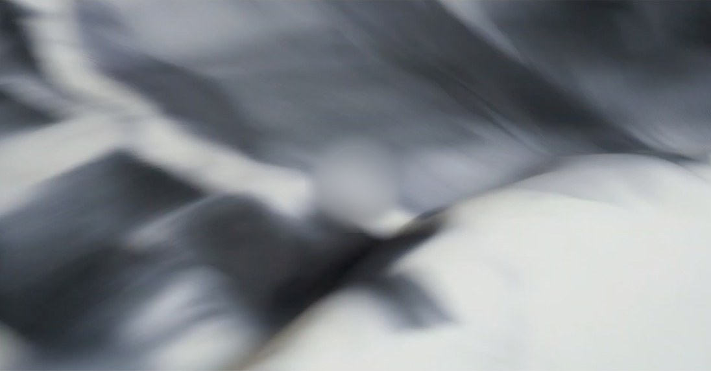
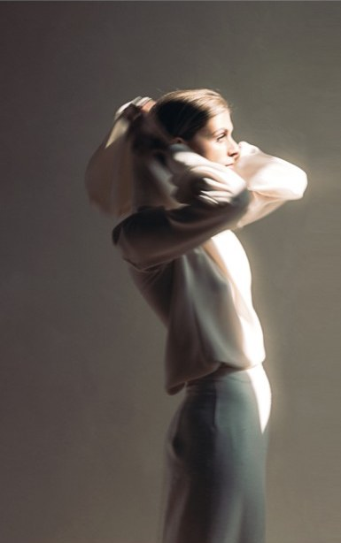
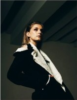
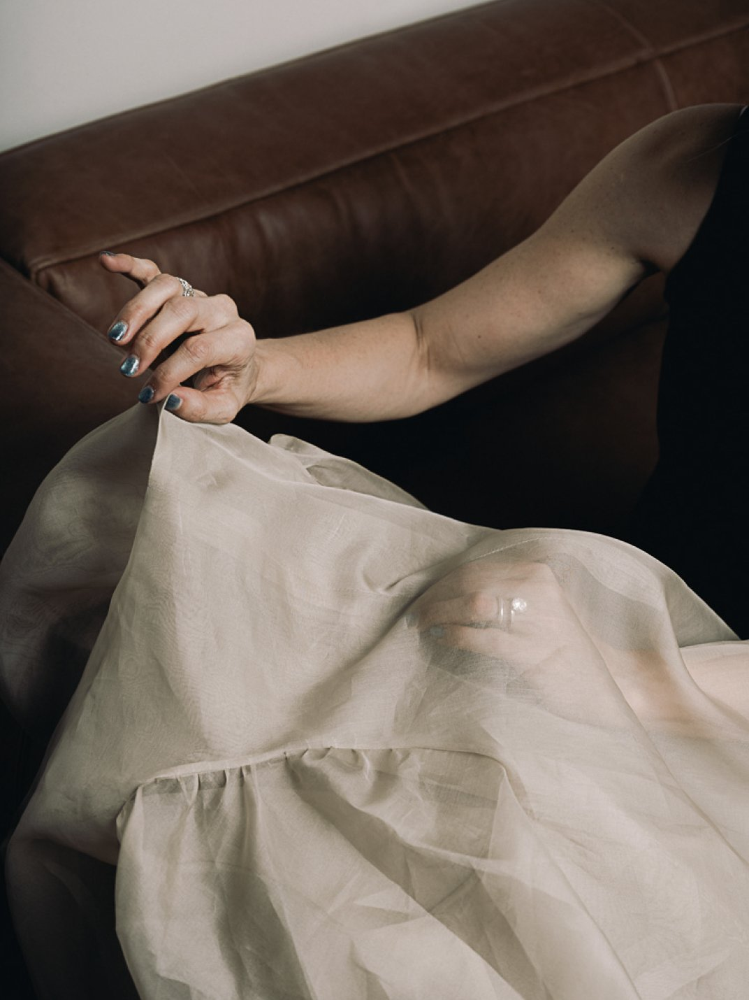
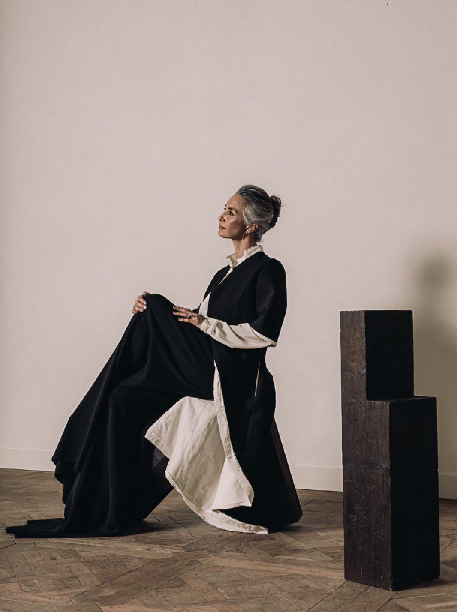
“Il mio lavoro nasce sempre
dal tessuto e dal rapporto
con il corpo della donna.
I materiali, la consistenza
e il loro movimento sono
il punto di partenza per
la costruzione dei capi.”
Fuzia Jammali
Il carattere di ogni collezione
prende forma da tensioni
che restano aperte.
È l’incontro tra opposti
che si completano a vicenda,
realizzando un equilibrio
vivo, sempre in divenire.
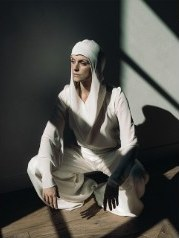
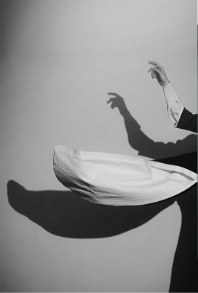
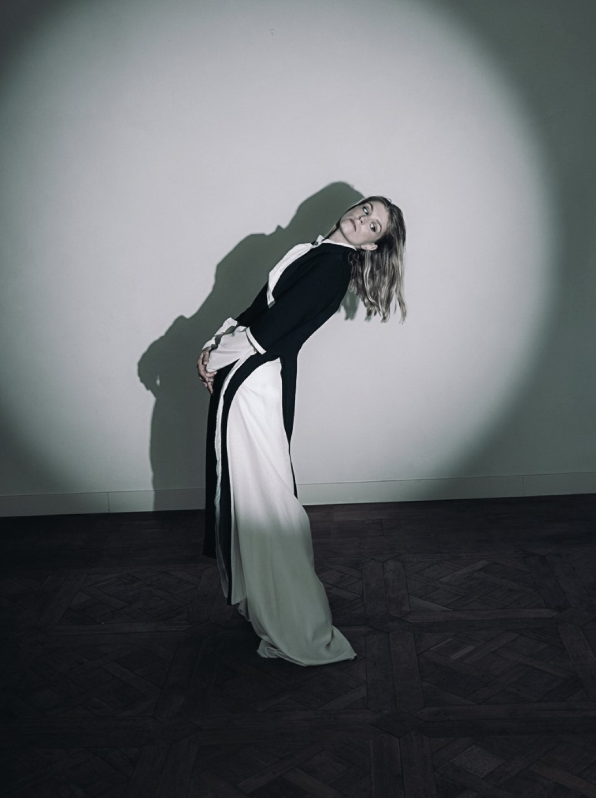
Linee costruite
con esattezza,
che si piegano
al ritmo del respiro
e del corpo
in movimento.
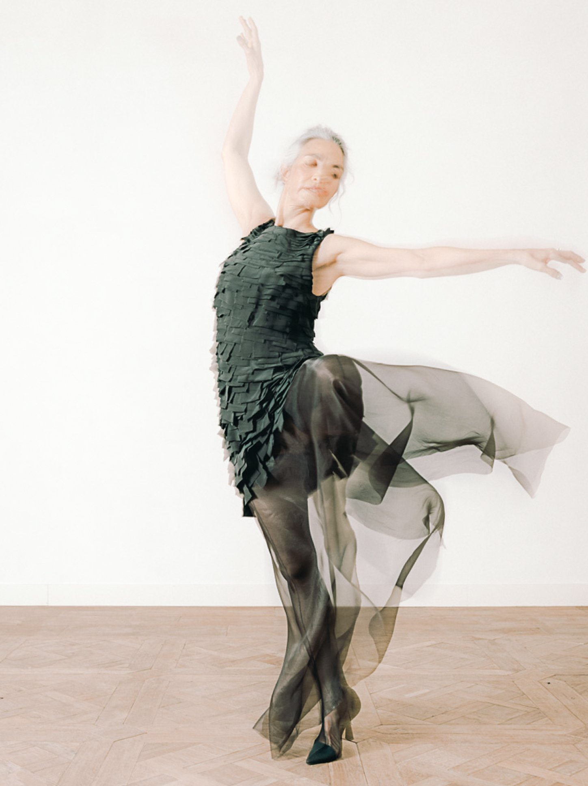
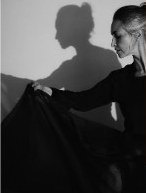
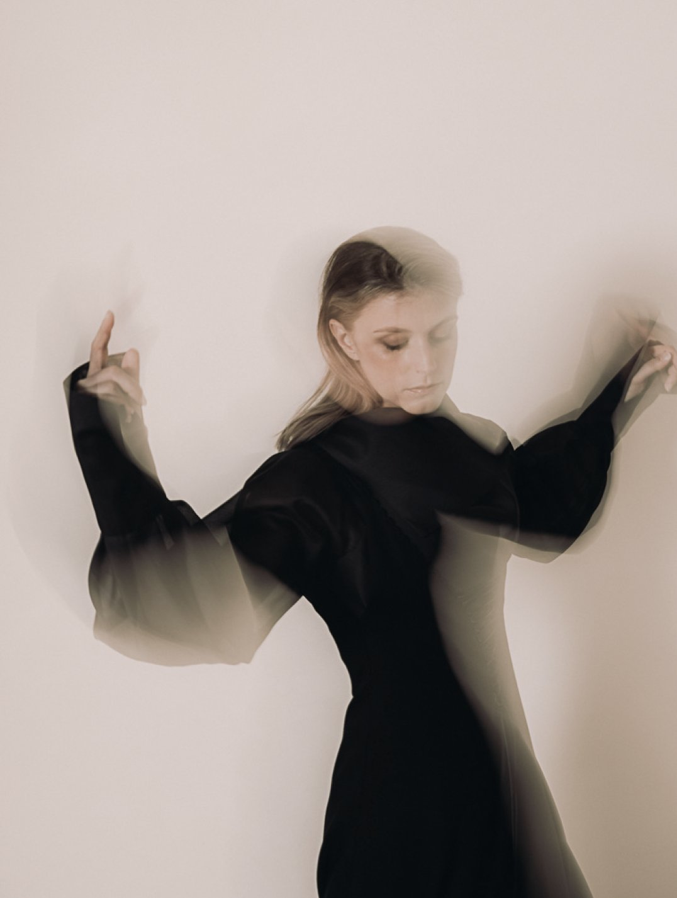
Ciò che si mostra
e ciò che si lascia
intuire, deciso capo
per capo, mai per
convenzione.
Disciplina e tecnica
impeccabile,
al servizio di una
visione libera.
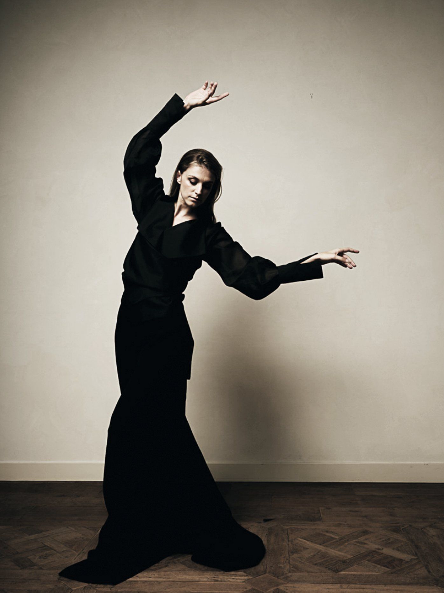
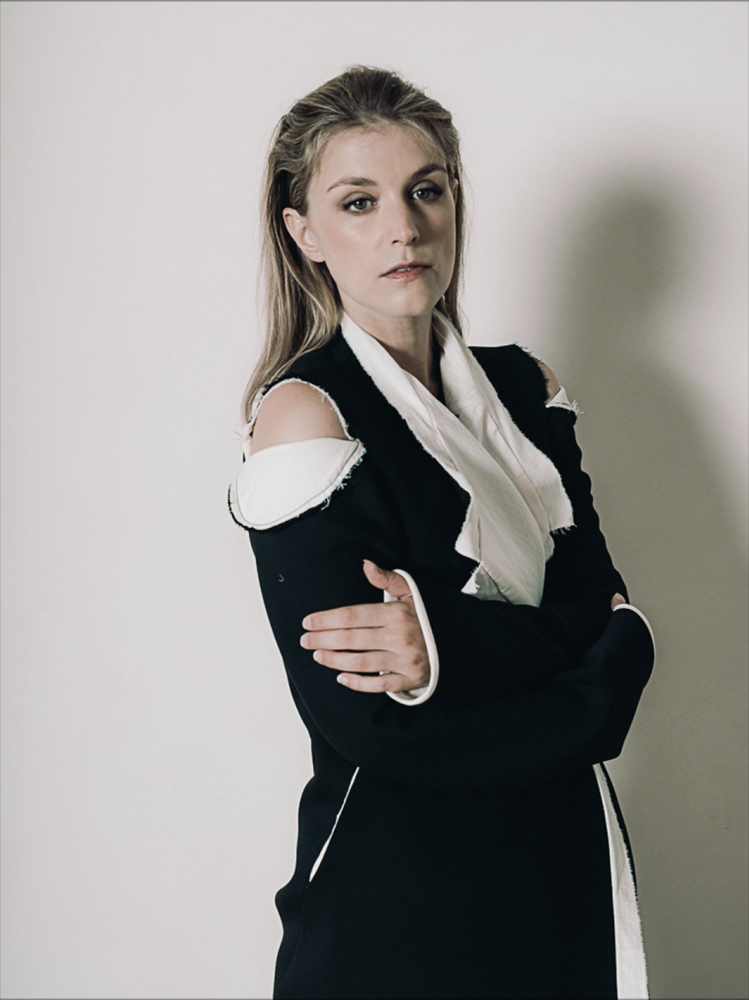
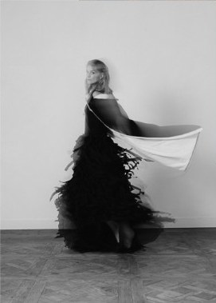
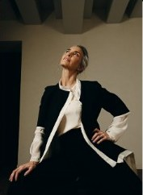
È una donna che non cerca conferme
né pose. La sua forza affiora da sola,
nel modo in cui incede, si siede, rivolge
lo sguardo. La sua sensualità è l’esito
naturale di un’intima confidenza con
il proprio corpo.
Gli abiti li incontra e li riconosce,
come si riconosce una persona affine.
La si nota per questo: per un gesto,
per un dettaglio, per una grazia che
le appartiene.
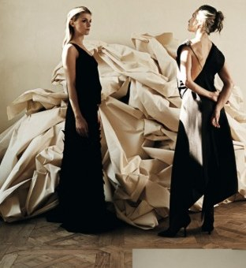
Come una stoffa che scivola sulla pelle. E poi resta.
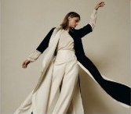
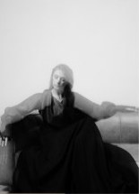
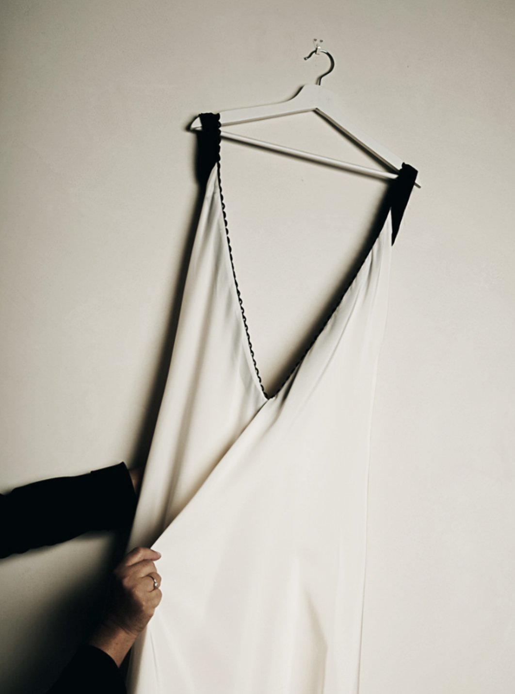
Si entra da una piccola porta, come
quella di un giardino segreto. Dall’altra
parte, ad accoglierti, c’è un mondo
riservato, discreto, intimo, dove si trova
soprattutto quello che non ci si aspetta.
Ci si può togliere le scarpe e cambiarsi
ovunque, senza cerimonie, come a casa di
un’amica. E mentre si provano gli abiti, ci
si spoglia anche dei pensieri, della
fretta, dei problemi che si portano
addosso. L’abito perfetto lo si incontra
quasi per caso, perché davanti a questo
specchio c’è la possibilità di scoprire
un’altra parte di sé.